Visual Studio Code Installation Guide for macOS
Introduction
This guide will walk you through the process of installing Visual Studio Code (VS Code), a popular and versatile code editor, on your macOS computer. VS Code provides a powerful environment for coding and development across various programming languages.
Prerequisites
Before you begin, ensure you have the following:
- A macOS computer.
- An internet connection.
Installation Steps
1. Download Visual Studio Code
Visit the official VS Code download page at https://code.visualstudio.com/download.
2. Choose the macOS Installer
Click on the “macOS” download link to download the Visual Studio Code for macOS.
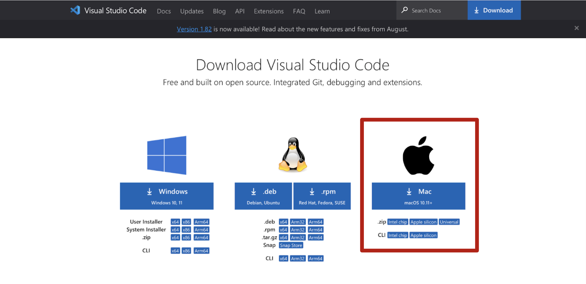
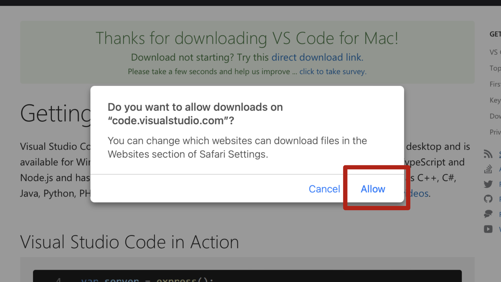
3. Install Visual Studio Code
- Locate the downloaded file (usually in your “Downloads” folder).
- Double-click the VS Code disk image (
.dmg) file to open it.
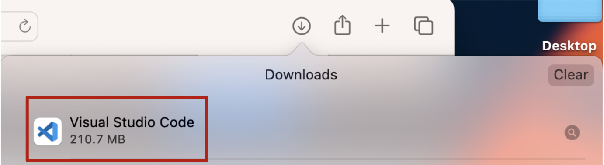
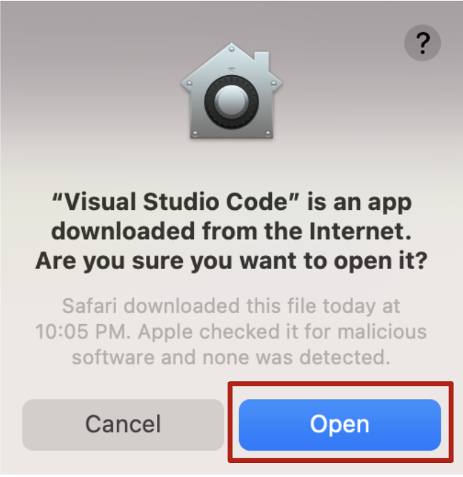
4. Launch Visual Studio Code
Open your “Launchpad” and locate the “Visual Studio Code” application. Double-click it to launch the editor.
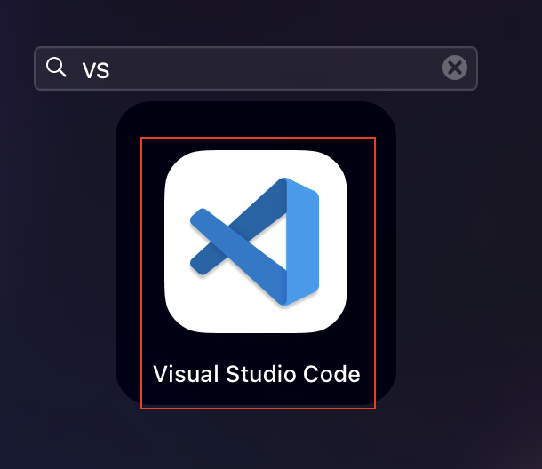
5. Customize VS Code (Optional)
Upon launching, you can customize Visual Studio Code by installing extensions, themes, and configuring settings to suit your development needs. (Optional)
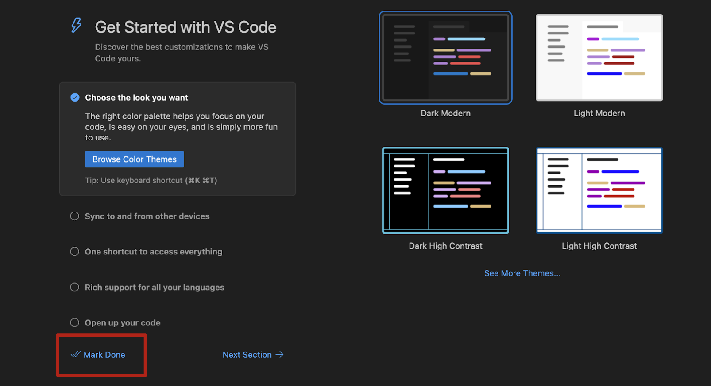
6. Open Extensions Tab
On the sidebar click on the Extensions tab.
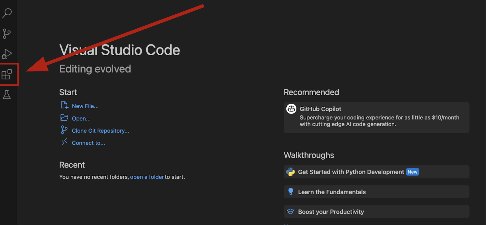
7. Select “Python” Extension
Under the “Popular” select “Python”.
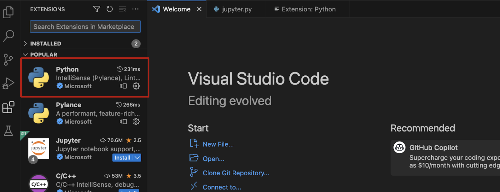
8. Install Python Extension
On the right panel click on the install button to install the extension.
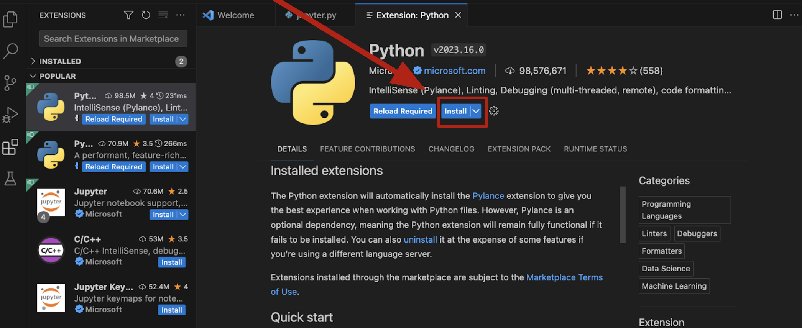
9. Open a New File
Click on the File tab from the toolbar and open a New File.
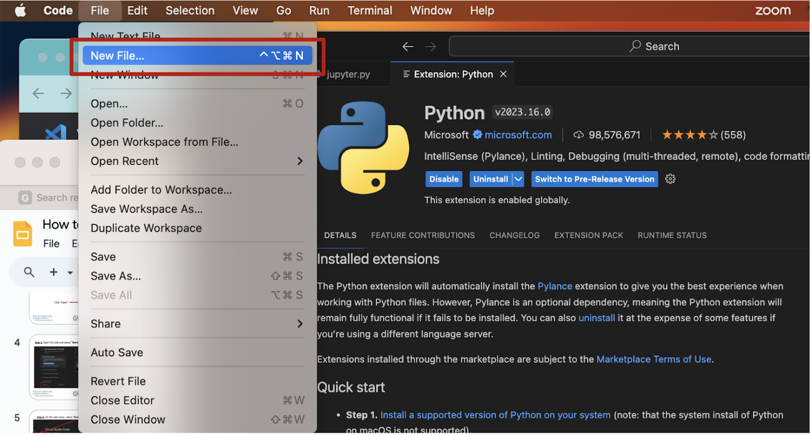
10. Open a Jupyter Notebook
From the drop down menu, select “Jupyter Notebook” as the file type.
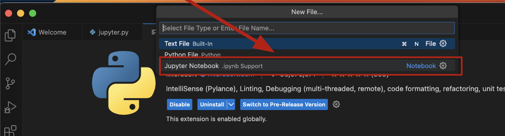
Conclusion
Congratulations! You’ve successfully installed Visual Studio Code on your macOS computer. VS Code is now ready for you to use as a powerful code editor for various programming languages.
Feel free to explore the extensions marketplace and customize VS Code to enhance your coding experience. Happy coding!
For more information and documentation on Visual Studio Code, visit https://code.visualstudio.com/docs.